Quatro conceitos de anúncio para a BK Clothing no Google, nos três formatos de imagem que a rede de display pede. A regra é uma só: a peça ou a foto fala, o texto fica pequeno.
A peça sozinha no centro, com espaço de sobra em volta. É o anúncio de produto.
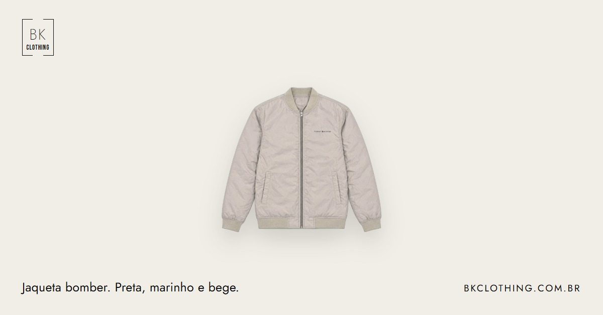
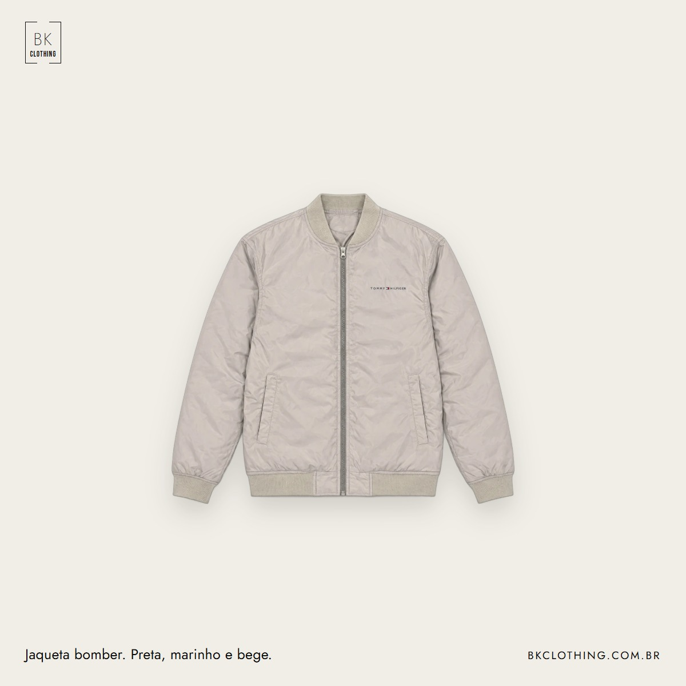
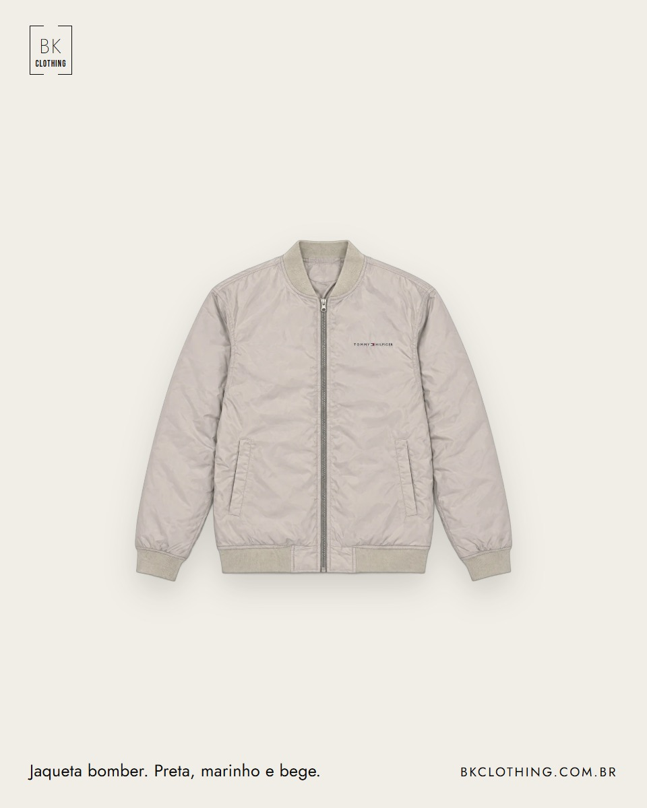
A mesma jaqueta nas três cores, lado a lado, com o nome de cada uma.
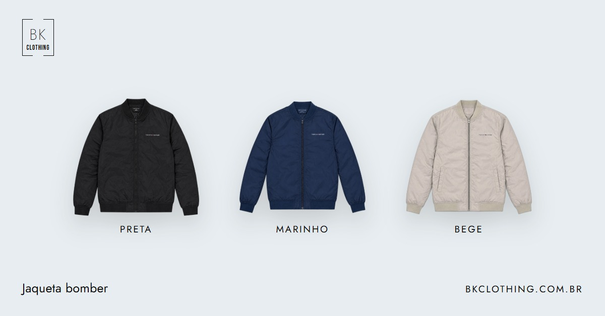
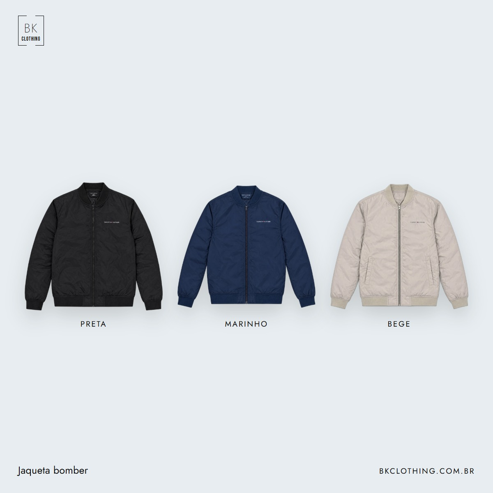
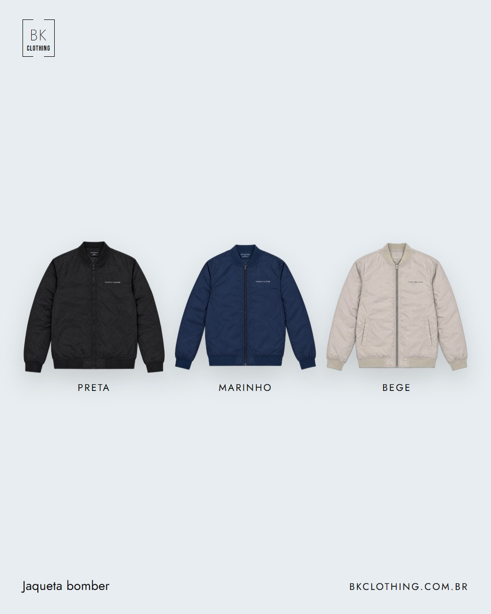
Foto real de alguém vestindo. Sem texto em cima do modelo.
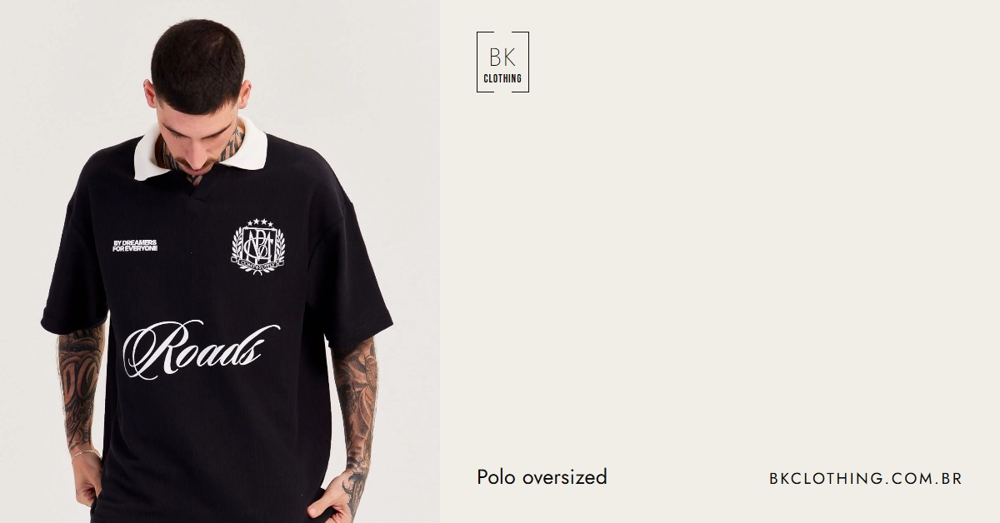
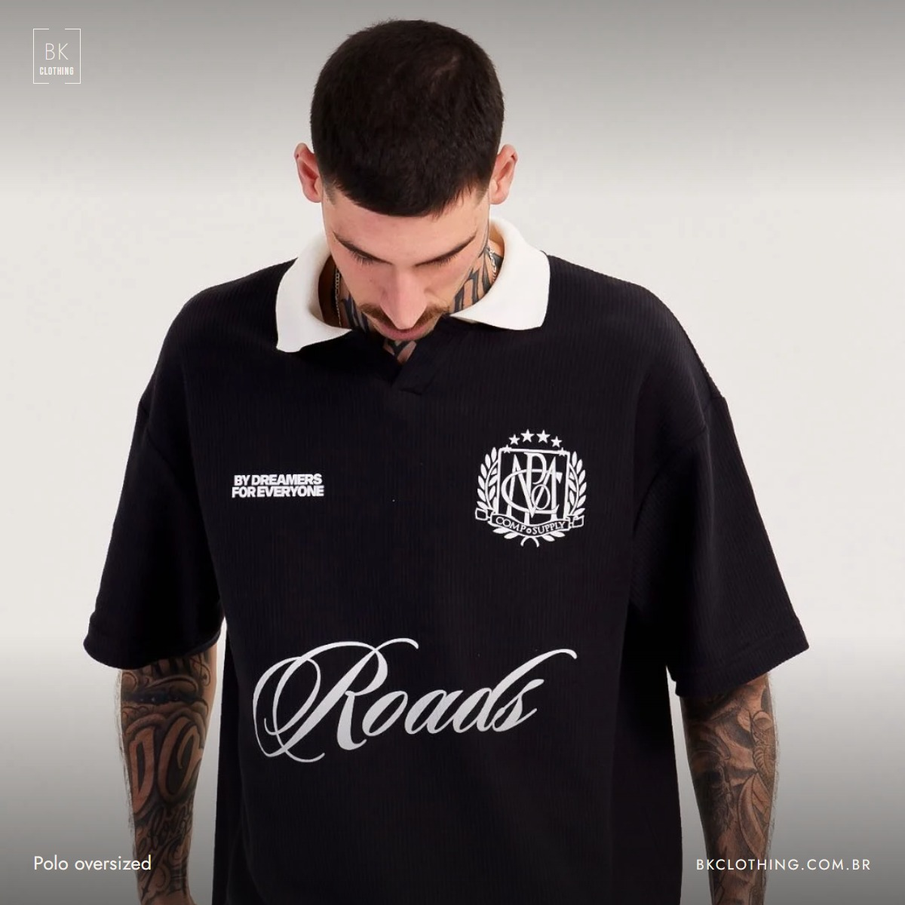
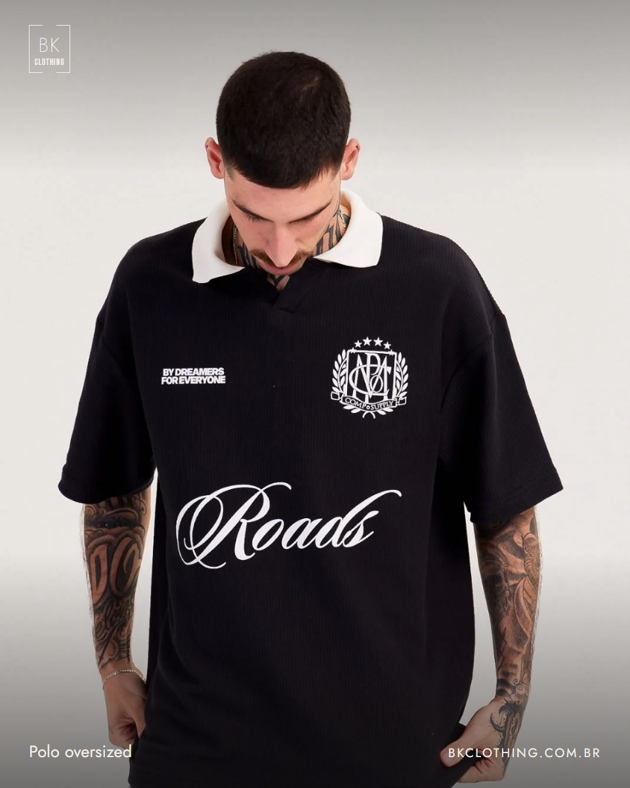
A parede da loja com o letreiro, só com o endereço. Para anúncio local em Joinville.
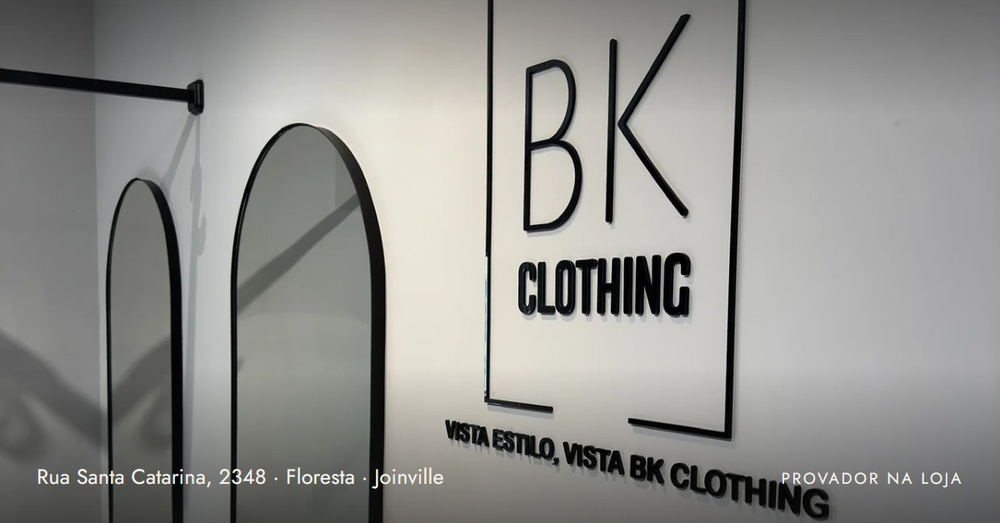
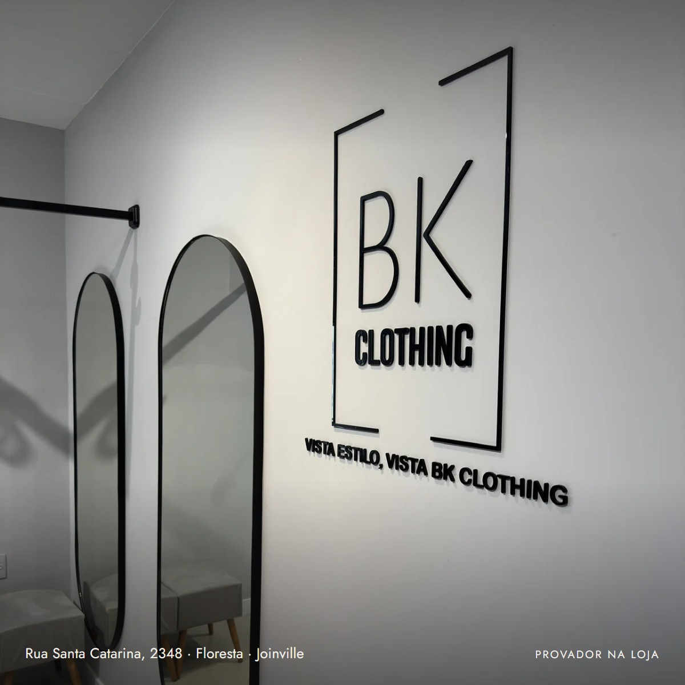
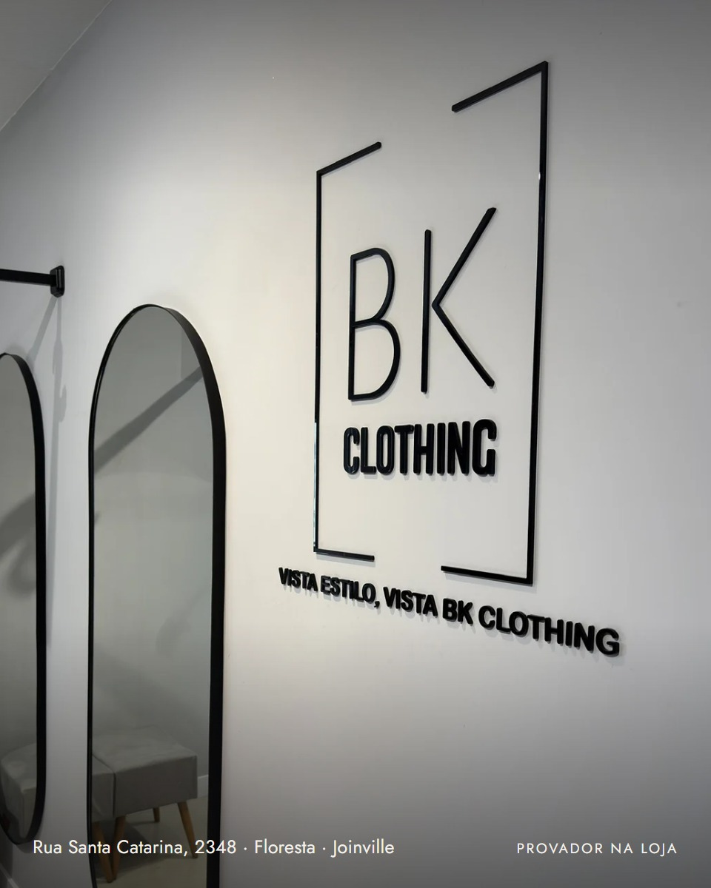
O primeiro conceito em vídeo de seis segundos, quadrado, sem som.
A peça aparece, a câmera se aproxima devagar, a linha de texto entra e o vídeo fecha na logo. Serve para qualquer peça: troca a foto e a linha.